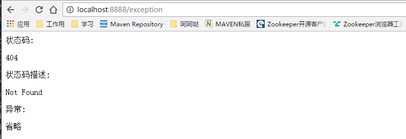

errorHandle 详细介绍以及使用方式举例
统一的异常结构
ResolvedError 属性如下：
| 名称 | 含义 | 例子 |
|---|---|---|
| timestamp | 时间戳 | 1481270674384 |
| status | http code | 404 |
| error | http code 对应错误信息 | "Not Found" |
| exception | 异常 | java.io.IOException |
| message | 异常描述信息 | an I/O exception of some sort has occurred |
| trace | 异常堆栈信息 | ... |
| errors | jsr303验证不通过 | [{"field":"name","rejected":"&&&&&*","message":"名字字段不能包含特殊字符"}] |
| path | 当前请求路径 | /exception |
| datetime | 时间(ISO8861)更加可观 | 2016-12-09T16:04:34.438+0800 |
| headers | 异常头部信息 | [{"name":"RESOLVED-ERROR","values":["RESOLVED-ERROR"]}] |
| localizedMessage | 异常本地化信息(重要 可作为页面错误展示用) | 输入输出异常 |
| tracks | 请求堆栈(可设置开关) | ["curl -H 'Accept: text/html,application/xhtml+xml,application/xml;q=0.9,image/webp,/;q=0.8' -X GET http://some-service:8080/exception"] |
支持restful, template, mixed三种应用.
> 对于template应用，用户可以自定义错误页，并且错误页只用一个更精简更好管理。 对于mixed应用，根据请求自动决定使用错误页或Restful错误信息。 对于restful错误信息 使用内容协商确定返回JSON或XML。
上面这三点已经在简单示例介绍中有所演示。配置 为 app.type: XX # MIXED,RESTFUL,TEMPLATE 三种
错误页详细介绍
1 统一的一个错误页面所有错误都会定向到这个页面 /src/main/resources/templates/error.html,在这个页面可以做美化，根据http code做跳转之类的操作等等
2 在页面可以拿到统一已解析异常ResolvedError所有属性（也可直接取这个对象），可以从里面取出感兴趣的内容进行展示。
thymeleaf代码示例
<!DOCTYPE html>
<html lang="en" xmlns:th="http://www.thymeleaf.org">
<head>
<title>Title</title>
</head>
<body>
状态码: <p th:text="${status}"></p>
状态码描述: <p th:text="${error}"></p>
异常: <p th:text="${exception}"></p>
省略
</body>
</html>
效果如下： 
restful详细介绍
所有异常返回均为以下结构体即统一异常结构：(jsr303 验证需要前端做一些工作 //TODO)
{
"timestamp": 1481283168282,
"status": 404,
"error": "Not Found",
"message": "Not Found",
"path": "/exception",
"datetime": "2016-12-09T19:32:48.282+0800",
"errors":null //--- 在验证不通过的情况下会有
"headers":[
{
"name": "RESOLVED-ERROR",
"values":[
"RESOLVED-ERROR"
]
}
],
"localizedMessage": "null",
"tracks":[
"/exception"
]
}
主动抛出异常
使用 cn.home1.oss.lib.errorhandle.api.ApplicationExceptions
public static void checkArgument( //
final boolean expression, // 判断参数 final String format, final Object... arguments // 信息模板 ，参数示例： checkArgument("param"==null,"参数不能为null 您输入的是{}"，"param")
public static <T> T checkNotNull( //
final T object, // //判断null final HttpStatus status, final String format, final Object... arguments //示例：
public static void check( // 更自由的检查 可自定义http code final boolean expression, // final HttpStatus status, final String format, final Object... arguments // 示例：
public static ApplicationException wrap( //包装原生异常为我们的异常 需要自己抛 final Throwable throwable, // final HttpStatus status, final String format, final Object... arguments // 示例：
public static ApplicationException applicationException( // 直接 final HttpStatus status, final String format, final Object... arguments //
示例：throw ...
自定义异常展示信息
一些常见异常，我们提供的默认的本地化信息 如：
java.io.FileNotFoundException.status=500
java.io.FileNotFoundException.template=文件未找到异常
若是想自定义的异常显示信息，配置也很简单：只需要在 src/main/resources/errorhandle 目录下增加命名为 application 的i18n properties配置，按照下面的格式填写即可。
例子： java.io.FileNotFoundException.status=500 java.io.FileNotFoundException.template=很抱歉 文件没有找到
带el表达式的： java.io.FileNotFoundException.status=500 java.io.FileNotFoundException.template=很抱歉 文件没有找到 异常信息 #{ex.message}
注意： 可以配置覆盖策略 application.yml中
app.error.searchStrategy = HIERARCHY_FIRST # ORDER_FIRST, HIERARCHY_FIRST 自定义异常模板信息替换策略 默认HIERARCHY_FIRST
前端配合表单验证 //TODO
表单验证格式
"errors":[
{
"field": "age",
"rejected": 12222,
"message": "年龄不超过100岁"
},
{
"field": "name",
"rejected": "showexample",
"message": "姓名必须是邮箱格式"
}
]
前端可怎么使用
当http code为422时，errors 不为null且数据结构如上图，则前端可根据这个基础做一个表单验证框架
前端提示信息 直接使用 localiedMessage 即可
情景描述：异常对开发来说认识，但是对用户来说是个灾难，所有我们增加了一层本地化转译异常信息的概念，当发生异常时，向用户提供经过转译的信息，能使用户快速明白异常或异常的原因
xxx 待补充
凡是想给前端我们这个统一的信息时 直接抛异常告诉我们 xxx 待美化语言
正常业务，可以直接使用我们提供的检验参数的方法，主动的抛出异常，并且异常信息的localiedMessage是可定制的，这样就可以更灵活的与用户交互